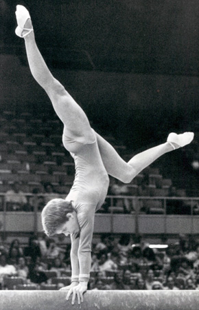

Robin Huebner (USA)
1976 Moscow News V and FX Bronze Medalist
1977 Champions All AA Bronze Medalist
1980 and 1982 Big Ten AA Champion

Robin was born on October 9, 1961. She got involved in gymnastics because of a misunderstanding. She wanted to be a pole vaulter and thought that gymnastics was pole vaulting. She trained with Gabor and Katica Deli at the Mini-Hops Gym Club in Minnetonka, MN, and had a successful international and NCAA gymnastics career. In 1983, Robin was named her university's female athlete of the year. She worked as a news anchor for KVLY-TV in Fargo, North Dakota, for many years and has been a digital and print news producer at The Forum for over a decade.
Competition Results
1974
Western Dakota Championships: 1st Team, 1st AA, 1st V, 1st UB, 1st B, 1st FX
1975
International Junior Champs: 8th AA
USGF Regional Qualification Meet: 2nd AA
1976
Moscow News: 4th AA, 3rd V, 3rd FX
North Dakota State High School Meet: 1st Team, 1st AA, 1st V, 1st UB, 1st
B, 1st FX
Olympic Qualifying Competition: 1st Team, 6th AA
USGF Elite Championships: 11th AA
USA Olympic Trials: 15th AA
Western Dakota Championships: 1st Team, 1st AA, 1st V, 1st UB, 1st B, 1st FX
1977
Champions All: 3rd AA
Elite Nationals: 11th AA
2nd Elite Nationals: 2nd AA
USA Championships: 13th AA
1979
Midwest Open: 1st Team, 3rd AA
Minnesota-SIU: 1st Team, 1st AA,
1st V, 1st FX, 3rd B
University of Minnesota Invitational: 1st Team, 5th AA, 3rd B, 1st FX
1980
AIAW Region 6 Championships: 1st Team, 3rd AA, 2nd FX
Big Ten Championships: 3rd Team, 1st AA, 1st UB, 1st FX
Midwest Open: 2nd Team, 4th AA
Minnesota-Arizona: 1st Team, 2nd AA, 1st B, 2nd UB, 3rd FX
Minnesota-Missouri: 1st Team, 1st AA, 1st UB, 1st FX, 2nd V
Minnesota-Wisconsin: 1st Team, 2nd AA, 1st UB, 1st FX, 2nd B
Windy City Invitational: 2nd Team, 1st UB
1981
AIAW Region 6 Championships: 2nd AA,
1st UB, 3rd B, 3rd FX, 6th V
Arizona State-Minnesota: 2nd Team, 3rd AA, 2nd V, 2nd B
University of Missouri Invitational: 3rd Team, 7th AA, 6th FX
Utah Invitational: 3rd Team, 10th AA, 10th FX
1982
AIAW Division I Championships: 5th AA, 2nd UB, 2nd FX
AIAW Region 6 Championships: 1st Team, 1st AA, 1st V, 1st UB, 1st FX
Big Ten Championships: 1st AA, 1st FX, 3rd B
Upper Midwest Meet: 3rd Team, 3rd AA, 2nd B, 2nd FX, 4th UB, 5th V
Minnesota-Iowa State: 1st Team, 1st AA, 1st V, 1st UB, 1st B, 1st FX
1983
Big Ten Championships: 2nd Team, 2nd AA, 1st FX, 4th B
California-Minnesota: 2nd Team, 1st AA, 1st UB, 1st B, 1st FX
NCAA Central Regional Championships: 2nd Team, 1st AA, 1st UB, 1st FX, 2nd V
NCAA Championships: 24th AA
This page was created on December
20, 2000 and was last updated on August 12, 2026.
© Gymn Forum